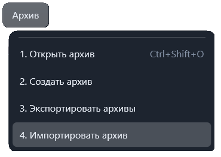

Функция «Импортировать архив»
Функция добавляет в хранилище программы готовый архив формата *.apkw.
Путь и вызов
- Нахождение в программе
- Верхнее меню → "Архив" → "Импортировать архив"
Команда доступна, когда активно рабочее окно архивов. Её также можно вызвать из контекстного меню корневого узла «Архивы».
Импорт
- Выберите команду «Импортировать архив».
- В диалоге выбора файла укажите архив с расширением *.apkw.
- Дождитесь уведомления об успешном добавлении архива.
Файл копируется в папку архивов программы и появляется в дереве. Если внутри архива отсутствует информация о его файлах, программа создаёт её автоматически. Импорт архива с именем, которое уже есть в хранилище, не выполняется.
